3.0.2
Key updates September 2026
CXBOX (Demo)
Added: Authorization - NEW popup on expired session/insufficient roles
When the backend answers 401 Unauthorized (the session has expired) or 403 Forbidden (the user has no roles), the user now sees a popup instead of empty widgets and endless spinners.
The popup has two buttons and a cross:
- Sign in again goes to the OIDC provider and back to the same screen. While the SSO session of the provider is alive, no password is asked. If it is over, the login page opens.
- Sign out does the same as the Log out button in the user menu.
- The cross closes the popup, so the user can copy unsaved data. The popup does not come back for 30 seconds (
AUTH_ERROR_SNOOZE_SECONDS), even if more requests fail. - If the OIDC provider is not reachable, both buttons leave the popup open and it says so. What the user has typed is not lost, and the user can try again.
Session has expired (401)
A popup is shown, every widget stays as it was.
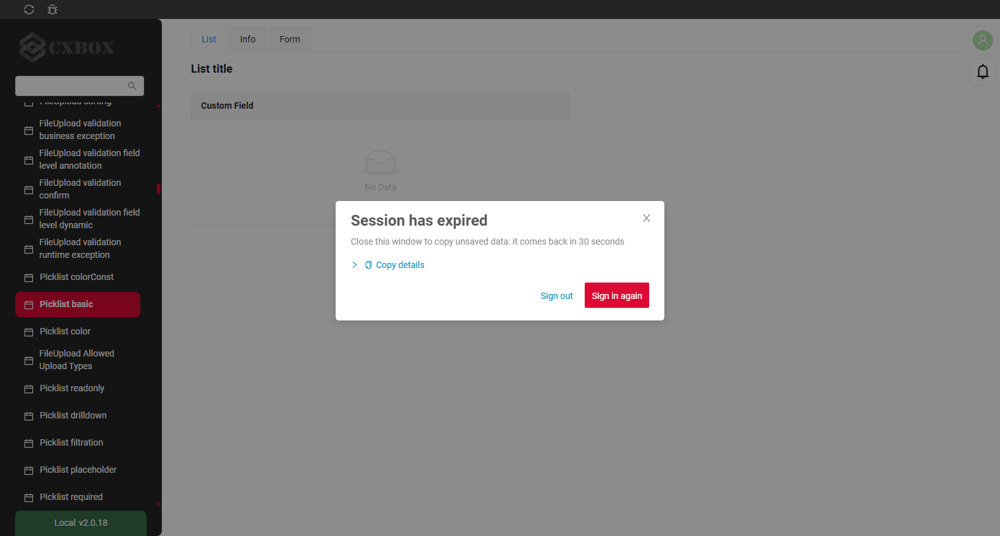
The request silently failed, widgets were left empty and nothing explained what happened.
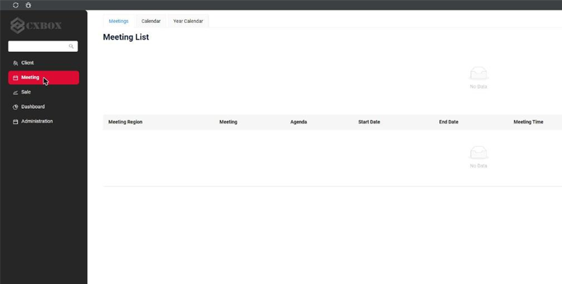
Insufficient permissions (403)
The popup names the reason.
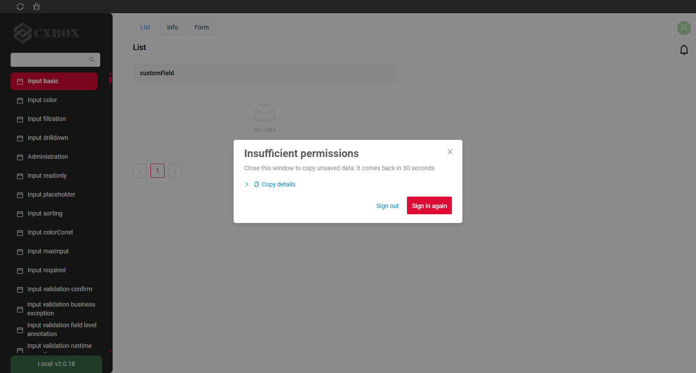
An empty "Error" popup without any text.
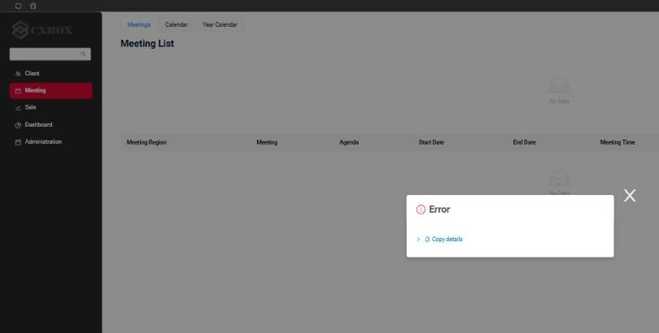
Sign in of a user without roles
The same popup is shown when a user without roles signs in. The application has not loaded yet at this point, so there is nothing behind the popup but the empty start page.
The popup on the empty start page: Sign out lets the user sign in as someone else.
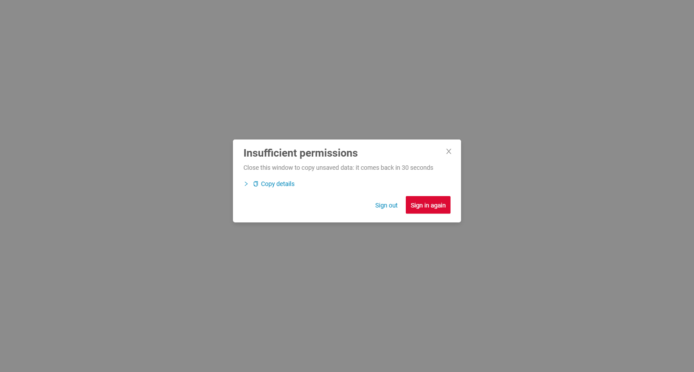
The application stayed on the loading spinner forever.
Configuration
Three constants in ui/src/constants/index.ts. They do not depend on each other, and the application works with any combination. The second and the third are the way back to the old behavior if something goes wrong at your OIDC provider.
| Constant | Values |
|---|---|
AUTH_ERROR_MODE |
soft (default): the popup can be closed with the cross. strict: no cross, the user either signs in again or signs out. |
USER_MANAGER |
rotationSafe (default): RotationSafeUserManager, see token renewal. original: UserManager of oidc-client-ts with the settings as before 3.0.2. The token is renewed only in the background, in every tab. A request with an expired token opens the popup. |
SIGN_IN_CALLBACK_DETECTION |
How the page learns at load that the OIDC provider returned the browser to it. oidcResponse (default): by the response of the provider in the URL, state with code or error. signInCallbackParam: by our sign_in_callback parameter from redirect_uri, as before 3.0.2. It stands after #, and a provider may drop it. |
USER_MANAGER and SIGN_IN_CALLBACK_DETECTION can also be switched for one browser, without a rebuild: the autotests compare the two values of each this way, and the support team can switch one user. Reload the page after it; removeItem() brings the build constant back.
localStorage.setItem('cxbox.userManager', 'original')
localStorage.setItem('cxbox.signInCallbackDetection', 'signInCallbackParam')
The popup with the cross.
The popup without the cross.
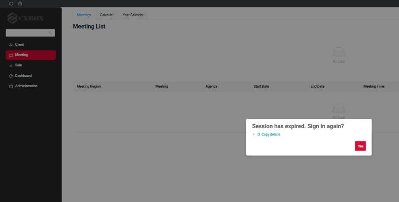
Fixed: Authorization - IMPROVED access token renewal: a refresh token is sent once, for all tabs and through F5
All tabs of the application in one browser share the stored user and therefore one refresh token (localStorage). With refresh token rotation in the OIDC provider (Keycloak Revoke Refresh Token, Blitz, Auth0, Okta; recommended by RFC 9700) a refresh token works once. A second use looks like theft: the provider rejects it and can close the whole session. The user sees 401 errors, and clearing the browser cache "helps".
oidc-client-ts does not protect against this. The issue is open since 2022: oidc-client-ts #430, the fix PR #434 was never merged, the same within one tab: #1618. Keycloak considers it the client's job: keycloak #16081.
- Before 3.0.2 the same refresh token was sent twice:
- by two tabs at the same moment: the background timer of
oidc-client-tsfires in every tab; - after F5 or a closed tab in the middle of a renewal: the new page sent the token that was already on its way;
- by the websocket of notifications, which called
signinSilent()on its own before every reconnect; - and an expired token was sent as is, because
getUser()does not renew anything: the backend answered 401 and the widgets were left empty.
- by two tabs at the same moment: the background timer of
- Since 3.0.2 the new class
RotationSafeUserManager(ui/src/auth/rotationSafeUserManager) is used instead ofUserManager. It extendsUserManager, overrides its methods and adds none. The folder depends only onoidc-client-tsand can be copied to any project as it is; seeREADME.mdin the folder.- The invariant. Each refresh token is sent to the provider at most once: for all tabs, after any page reload.
- The guard. Before a tab sends a refresh token, it writes a lock for this token to IndexedDB. The write is atomic for all tabs and survives F5 and a browser crash. A tab that finds the token locked sends nothing and takes the tokens that the sender stored.
- A burnt token. The token was sent, but no new tokens came: a refusal, a timeout, a lost answer, F5, a closed tab. Nobody knows if the provider used it, so it is never sent again. The session goes on with the SSO cookie of the provider, see the table below.
getUser()renews a token that expires within 5 seconds before it returns it, the waykeycloak.updateToken(5)did beforeoidc-client-ts. The request interceptor and the websocket take the token through it, nobody callssigninSilent()on its own.- The renewal ahead of expiry (60 seconds before) still starts in every tab, but the token is sent once.
- A Web Lock only lets a tab wait for the tab that is renewing. It is not the guard: without Web Locks (plain http) the token is still never sent twice.
- The websocket reconnects without a limit, the delay doubles after every failure up to 30 seconds (
maxReconnectDelayinui/src/constants/notification.ts). Without a valid token no handshake is sent: the popup is shown with the websocket request in its details, and the client tries again after the delay. - When a renewal fails, the browser console gets a warning, and the reasons go to Copy details of the popup, for example
Refresh token: invalid_grant. Hidden iframe: IFrame timed out without a response.
What the user sees:
| Scenario | The provider shares the site with the application (the hidden iframe works) | The provider is on another site |
|---|---|---|
| Two tabs renew at the same time | One tab sends the token, the other takes the result. Nothing is seen. | The same. |
| The provider is slow, the user presses F5 or closes the tab during a renewal | The token is burnt, the renewal goes through the hidden iframe. Nothing is seen. | The token is burnt. When the access token expires, the popup opens. Sign in again needs no password. |
| A network failure or a lost answer during a renewal | The same as above. | The same as above. |
| F5 during the sign in, while the code is exchanged for tokens | The sign in restarts by itself, no password. After 2 restarts in a row the popup opens, so a broken provider does not cause endless redirects. Before 3.0.2: an endless spinner. | The same. |
| The browser has no IndexedDB | The application creates the original UserManager for this browser, whatever USER_MANAGER says: the locks of RotationSafeUserManager live in IndexedDB. Copy details shows it as indexedDb: false. |
The same. |
Nothing in the application is switched off to test any of this. The UI tests in cxbox-code-samples provoke the races from the outside and read the refresh tokens out of the requests the browser really sent: the network of a tab is held or slowed down, a tab is frozen the way a browser freezes a background tab, the page is reloaded in the middle of a renewal, a refresh token is spent from the test itself. The same scenario runs with both values of USER_MANAGER and of SIGN_IN_CALLBACK_DETECTION, and the expected result of each value is written in the test (TokenRenewalAcrossTabsTest, SignInAgainPopupTest, WebSocketSessionTest).
Timings. Their ratio matters when a project tunes its OIDC provider:
- The token is renewed ahead of expiry 60 seconds before it expires (
accessTokenExpiringNotificationTimeInSeconds, the library default). getUser()renews a token that expires within 5 seconds.- A request with the refresh token waits for the answer up to 50 seconds (
SILENT_REQUEST_TIMEOUT_SECONDS), so it ends before the token expires. The other requests to the provider wait up to 60 seconds (OIDC_REQUEST_TIMEOUT_SECONDS). A renewal that ends by this timeout burns the token, so a stand with a slow provider may make both longer throughapp.oidc(silentRequestTimeoutInSeconds,requestTimeoutInSeconds), but cannot remove them. - The hidden iframe is given 30 seconds: it loads the page of the provider and then the application itself at
silent_redirect_uri. Where the provider forbids frames no answer comes at all. - The closed popup stays closed for 30 seconds (
AUTH_ERROR_SNOOZE_SECONDS).
Recommended limits for the OIDC provider (Keycloak names in brackets):
- Access token lifetime (Access Token Lifespan, demo containers: 2 minutes, demo.cxbox.org: 5 minutes): not less than 2 minutes. It has to stay well above the 60 second renewal margin, otherwise every freshly renewed token is already "expiring" and is renewed in a loop.
- Idle timeout of the session (SSO Session Idle, demo: 30 minutes) and the refresh token lifetime derived from it: longer than the access token lifetime. It is the time a user may stay idle before the next request ends in the popup.
- Refresh token rotation (Revoke Refresh Token, on in the demo containers): allowed, this release is about it.
- Signing keys of the realm (Realm settings - Keys): the realm needs an HMAC key for HS512, and not only the HS256 an older export may carry. Keycloak signs the cookie that restarts a login with it, and when the key is missing it makes one at the first sign in - several first sign ins at once each start making their own, the cookie signed in one state is verified against another, and the log fills with
cookie_not_foundandinvalid_codewhile the sign in hangs until its timeout. It cost the demo containers exactly that until the key was added to the realm export.
How to merge into a project
| What | How |
|---|---|
ui/src/auth/rotationSafeUserManager/, ui/src/auth/platformSession.ts, ui/src/components/AuthErrorPopup/, ui/src/components/ui/RequestErrorDetails/, ui/src/utils/requestErrorInfo.ts |
New files: copy. |
ui/src/auth/index.ts |
Auth.init builds one UserManager for callers that start together; USER_MANAGER chooses the class. The settings of the provider are as before. |
ui/src/api/index.ts |
The request interceptor is platformSession.authorizeRequest. |
ui/src/epics/session.ts |
ssoAuthEpic and logoutEpic call platformSession. New httpError401Epic and httpErrorDefaultEpic open the popup on 401 and 403. |
useNotificationClient.ts |
The handshake token comes from platformSession.authorizeWebSocketUrl. |
AppLayout.tsx, constants/index.ts, actions, reducers/session.ts, reducers/view.ts, ErrorPopup, i18n |
The popup is mounted, its state and texts, the three constants. |
Project code that calls Auth.getInstance().getUser() or signinSilent() |
Keeps working: the methods are overridden, not replaced. ESLint warns about an import of oidc-client-ts outside src/auth: a UserManager created by hand has no guard. |
Fixed: Authorization - IMPROVED user_roles db sync to roles from Keycloak/OIDC
When a user lost all roles in the OIDC provider, the roles were deactivated in the database on the next request, as before. But when the roles were returned in the OIDC provider, they stayed inactive in the database, because the comparison of token roles with database roles ignored the active flag. Now only active database roles take part in the comparison, so the roles are reactivated on the next login.
Added: Error popup - IMPROVED button 'Copy details'
Every error popup (the new 401/403 popup as well as the generic popup for business, system and network errors) now has a Copy details row:
- Copy details copies a JSON with everything the support team needs to find the request in the server log: session id (the same value is written to the SIEM log as
session: ...), current screen, view and browser URL, request method and URL, HTTP status, request start and finish time, response headers and body. The last lines say what the token renewal stands on in this browser (webLocks,indexedDb) and the three authorization constants it runs with. - The arrow expands the same details on screen, so a screenshot is enough to start the investigation: session id, start and finish time, error code and request. Opening the details copies them as well.
Generic error popup (a 400 response)
The details row is always visible.
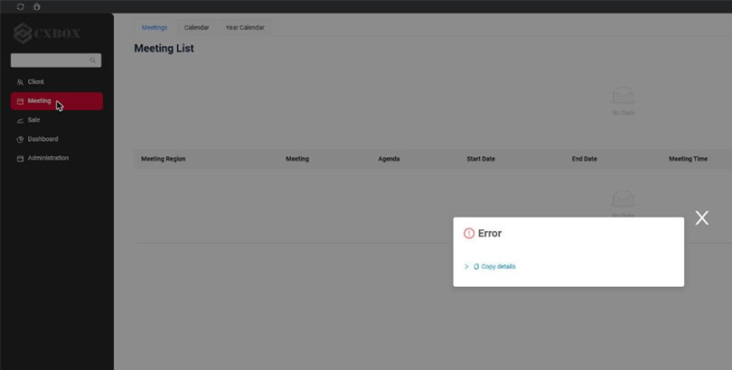
The same error: an empty popup, nothing to copy or to show on a screenshot.
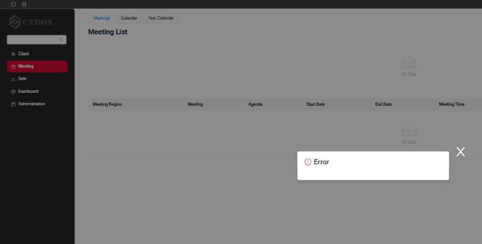
System error (a 500 response)
The details are expanded.
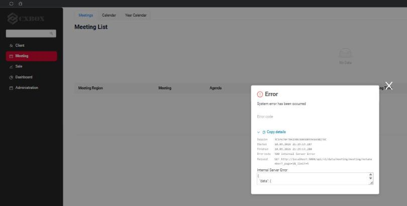
System error: only the response body was available under "Details".
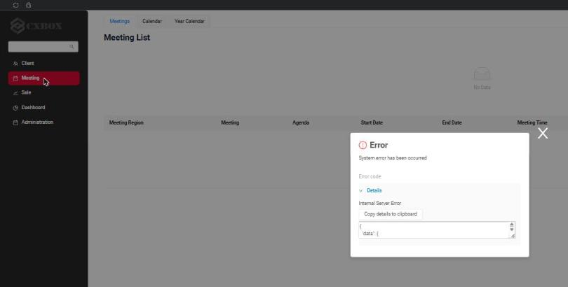
The same Copy details row is present on the new popup for 401 and 403, see the before/after screenshots above.
Example of the copied JSON:
{
"sessionId": "3C1F67AF784230E3EB5DB594EA3B27EC",
"clientId": 1789057000000,
"login": "DEMO",
"location": "http://localhost:3000/#/screen/meeting",
"screen": "meeting",
"view": "meetinglist",
"statusCode": 403,
"statusText": "Forbidden",
"method": "GET",
"url": "http://localhost:3000/api/v1/data/meeting/meetingStats?_page=1&_limit=5",
"startedAt": "2026-09-10T18:26:00.410Z",
"finishedAt": "2026-09-10T18:26:00.757Z",
"responseHeaders": { "www-authenticate": "Bearer error=\"insufficient_scope\"" },
"responseBody": null,
"userAgent": "Mozilla/5.0 ...",
"webLocks": true,
"indexedDb": true,
"userManager": "rotationSafe",
"authErrorMode": "soft",
"signInCallbackDetection": "oidcResponse"
}
Fixed: Notifications - "Close all" button was always visible
The Close all button in the top right corner was visible even when there were no notifications: the stylesheet of the notifications container is loaded before the antd stylesheet, so the antd button style overrode the rule that hides the button. The rule is now more specific and the button is hidden until a notification appears.
Fixed: Signing - the CryptoPro popup stays open with a spinner until signing ends
After - The user presses the button to sign or encrypt, the popup stays open and the button shows a spinner until CryptoPro has finished and the result is uploaded. While it is in progress, the popup cannot be closed by the cross, by a click outside or by Esc, so the user cannot leave the form and lose the result.
Before - The popup closed at once after the button was pressed, signing went on in the background without any sign of progress. With a long signing the user did not know if it was going on and could leave the form in the middle of it.
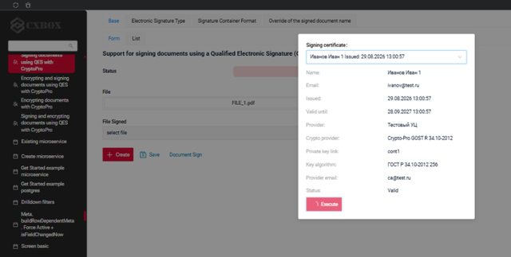
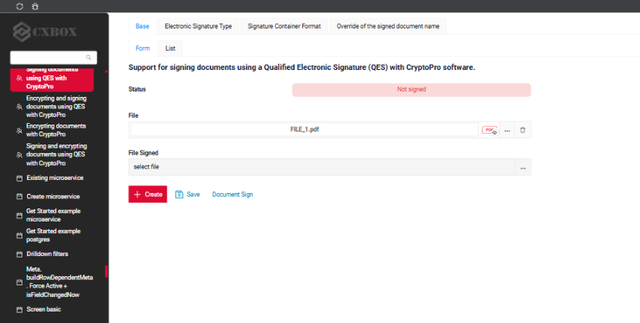
The search of the certificates in CryptoPro has also become faster.
Fixed: Full text search - clearing the field no longer sends an empty search
When the user cleared the full text search field, the application sent a request with _fullTextSearch=null, and the backend searched by the text "null". Now clearing the field just removes the search, and the list shows all records again.
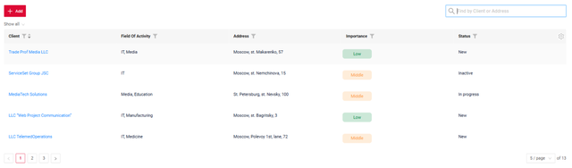
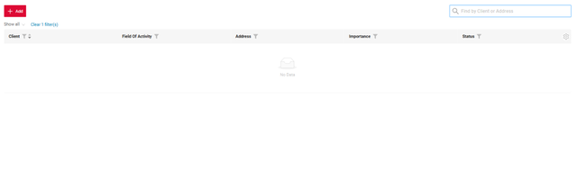
Fixed: Tooltips of truncated text and the richText toolbar in the calendar are shown on top
- The tooltip with the full value of a
textfield shortened bytext_maxDisplayedis now shown over the widget. Before, it could be cut off by the borders of the widget.
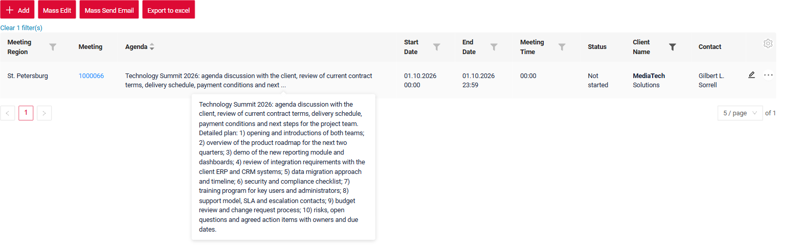
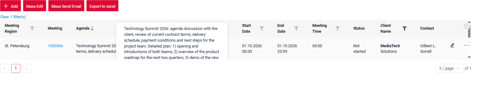
- In the inline form of CalendarList and CalendarYearList, the drop-down lists of the
richTexttoolbar (for example, headings and text color) are shown over the form. Before, they were cut off by the form, and the event popup could close.
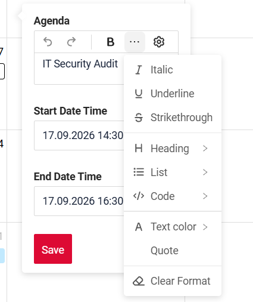
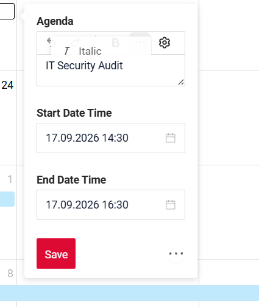
Fixed: AdditionalInfo - show condition
When all widgets AdditionalInfo on the right are hidden, the other widgets of the view take the whole width.
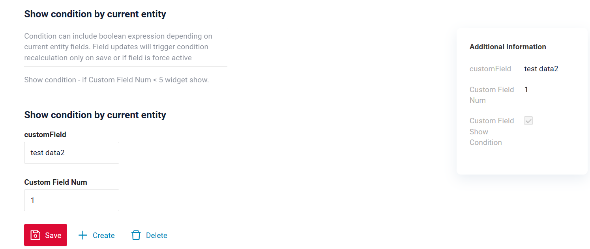
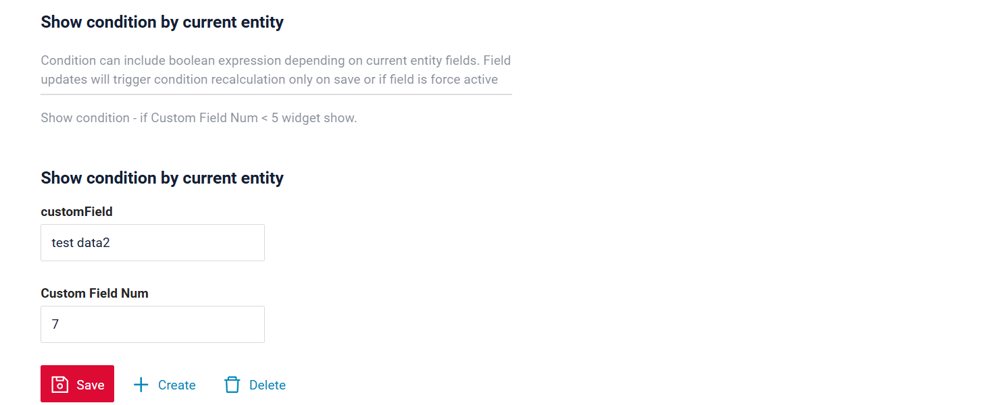
Added: pickList and pickTree - filter display the number of selected records
The pickList and pickTree while the filter selected in the popup is applied, the "..." badge will display the number of selected records
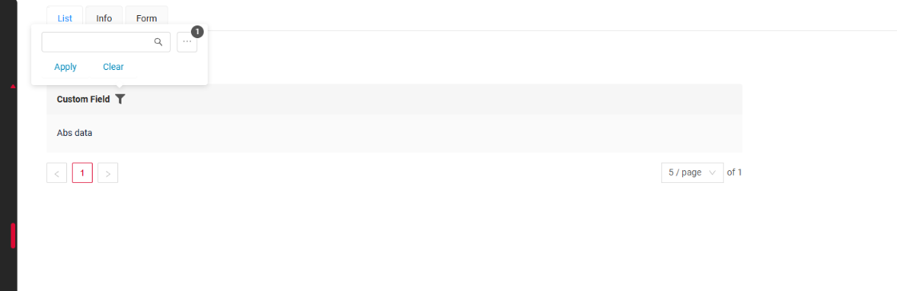
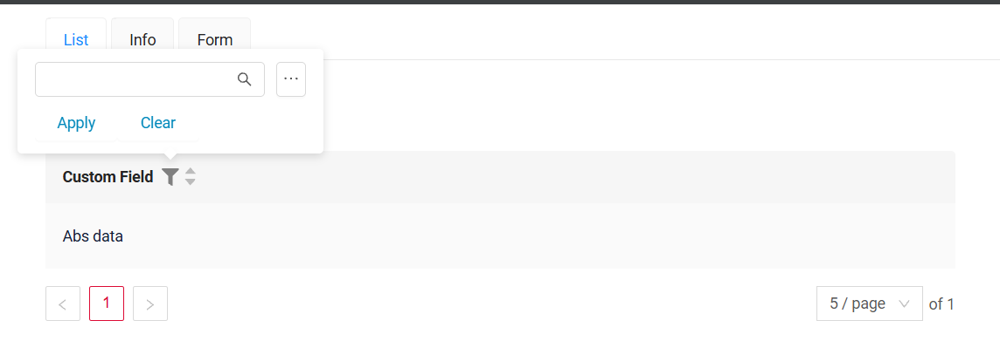
Added: dictionary and multipleSelect - width of the drop-down list
The dictionary and multipleSelect articles describe the width of the drop-down list: it grows with the longest value up to a frontend constant (dictionary_dropDownMaxCols, default 5, and multipleSelect_dropDownMaxCols, default 1.3, in field widths), long values are shortened with an ellipsis and shown in a tooltip.
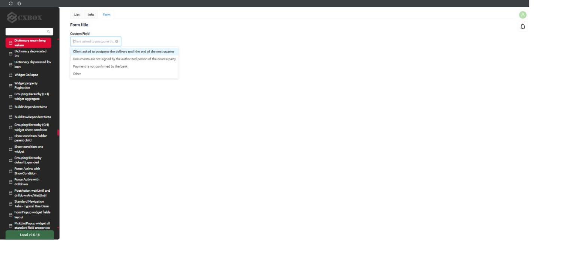
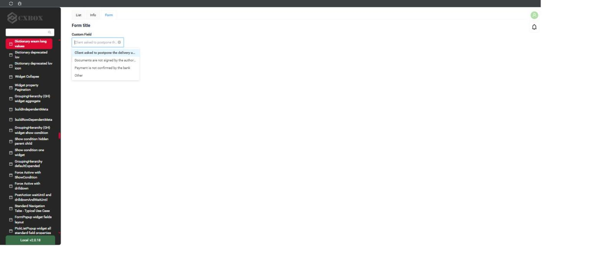
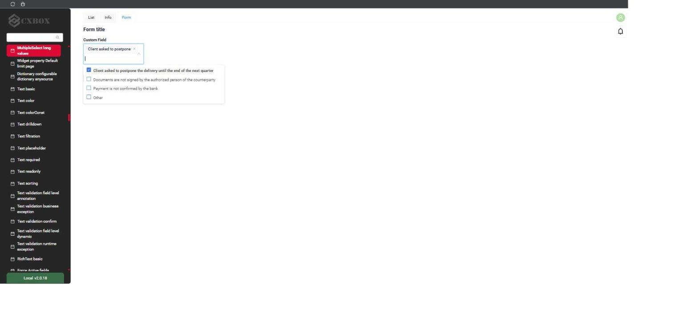
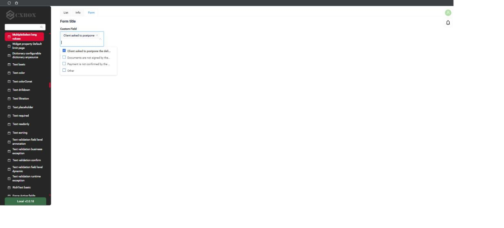
Fixed: FormPopup and confirmation with a form no longer "jump" on forceActive fields
Warning
Not merged into main yet: cxbox-demo #724 (branch feat/CXBOX-1433), cxbox-code-samples #777.
After - the user changes a forceActive field in a FormPopup or in the confirmation of a mass operation with a form. While the meta of the row is refreshed, the form stays on screen with the values the user has typed, and a spinner is shown over it, the same way as on ordinary widgets (List, Form, Info).
Before - after each change of a forceActive field the whole form was replaced by a loading skeleton and then drawn again. The popup "jumped", the user lost the place in the form and the focus, and on a slow network did not see the form at all until the answer came.
The skeleton is still shown when the popup opens and the form has nothing to show yet: neither the data nor the meta of the row.
The field keeps the typed value, a spinner is shown over it until the meta comes.
The form is replaced by a skeleton right after the value is typed.
Added: Signing and encryption with CryptoPro - large files
Signing and encryption with CryptoPro now work with large files, both in the signing popup and in mass operations.
- Detached signature and encryption of a file of any size. The file is read in parts of 3 MiB, the CryptoPro plugin signs the hash of the file and encrypts the file in parts. Before, the whole file was given to the plugin in one call: the plugin signs files of only 10–60 MB depending on the computer, on a larger file it could hang without an error ("Lost connection to extension"), and the browser extension had to be restarted. The result of encryption is still one
.encfile. - Attached signature (the file inside the signature) - up to 30 MB by default. A larger file is rejected at once, before the file is read and the plugin is called: the user sees "The file is too large for an attached signature" with the file size and the limit (in MB and MiB, as Windows Explorer and Finder count them differently). The limit applies to every attached operation, also to "encrypt and sign": the encrypted file the plugin receives is ≈ 1.78 times the original one.
- Attached signature without the size limit - optional. With
REACT_APP_CRYPTOPRO_ATTACHED_ASSEMBLY=trueevery attached signature is assembled: the plugin signs the hash, the application inserts the file into the signature. The result is an ordinary attached signature of the same file, made by CryptoPro. Limits: such a signature is not verified in the browser after the file is inserted;csptestverified assembled signatures up to 100 MB (above 100 MB a warning is written to the browser console, the signature is still made); check that the software of the recipient accepts attached signatures. - Checks of the result. The signature returned by the plugin is checked: an empty signature (the plugin returns it without an error, for example for RSA keys with SHA-2) and an unknown signature type are errors, not a "signed" file. The hash algorithm is chosen by the key of the certificate (GOST R 34.10-2012 256/512).
- Clear errors. A plugin failure is shown as a notification with a short title, advice what to do and the plugin text in the details: PIN dialog cancelled, certificate expired or not trusted, unsupported key, plugin not found / outdated / not responding, file too large, time stamp service not configured.
- Progress and stop. In the signing popup the button shows a spinner until the end; for a native attached signature the user can press Cancel to stop waiting (the plugin has no method to cancel a call already running: its result is ignored, an open PIN dialog of CryptoPro must be closed with "Cancel"). In a mass operation the step shows the progress of the rows (
done / total), and the processing is stopped with its own button. - Not supported: decrypting and verifying existing signatures, encryption with a plugin older than 2.0.15260, plugins without the async API.
Settings (environment variables of the frontend, ui/.env*)
| Variable | Meaning | Default |
|---|---|---|
REACT_APP_CRYPTOPRO_ATTACHED_ASSEMBLY |
true - every attached signature, of any size, is assembled from a detached one and the file |
false - attached signature by the plugin up to 30 MB |
REACT_APP_CRYPTOPRO_TSA_URL |
time stamp service, required for CADES_T |
not set - signing with CADES_T fails before the plugin is called (TSA_NOT_CONFIGURED) |
REACT_APP_CRYPTOPRO_INSTRUCTION_LINK |
link to the setup instruction when the plugin or certificates are not found | https://doc.cxbox.org/features/sign/sign/ |
Constants (CRYPTOPRO_CONFIG in ui/src/features/cryptoPro/config.ts; MB = 1 000 000 bytes, MiB = 1 048 576 bytes)
| Constant | Value | Meaning |
|---|---|---|
chunkSize |
3 MiB | part of the file for hashing and encryption, a multiple of 3 (as in the CryptoPro sample plugin-samples-fileapi_stream) |
nativeAttachedMaxSize |
30 MB (30 000 000 bytes) | the largest original file for an attached signature by the plugin (SignCades); a setting with a margin, not a documented limit of the plugin (testing: 34 MiB was signed, 35 MiB hung the plugin). Not used when REACT_APP_CRYPTOPRO_ATTACHED_ASSEMBLY=true |
chunkTimeout |
60 s | time to wait for the plugin to take one part of the file, then "The CryptoPro plugin is not responding" (PLUGIN_NOT_RESPONDING) |
minPluginVersion |
2.0.15260 |
the oldest plugin for encryption in parts: since this version the parts of StreamEncrypt can be joined (CADES-2639); older - "The CryptoPro plugin is outdated" (PLUGIN_OUTDATED) |
DEFAULT_SIGNATURE_TYPE |
CADES_BES |
signature type when options.cryptoGenerator[].signatureType is not set in the widget meta (CADES_BES, CADES_T) |
DEFAULT_SIGNATURE_PACKAGE |
detached |
the signature without the file; attached - the file inside the signature |
| Path | Size limit |
|---|---|
detached signature (hash in 3 MiB parts, SignHash) |
no configured limit |
attached signature by the plugin (SignCades, the whole file) |
30 MB of the original file |
| attached signature with assembly | no configured limit |
encryption (StreamEncrypt in 3 MiB parts, one .enc) |
no configured limit; plugin 2.0.15260 or newer |
"No configured limit" does not mean any size works: the memory of the browser, the plugin and the software of the recipient still have their own limits.
Added: Mass operations - signing and encryption
Mass signing and encrypting is a mass operation that signs and encrypts the files of the selected rows with CryptoPro. All operation types of Signing and encrypting are available: signing, encrypting, signing and encrypting, encrypting and signing.
This function is available for widgets:
- List
- GroupingHierarchy
see more Mass operations
Fixed: Fixed filter – hint field
The filter for the hint field has been changed.
After - .contains request is sent, so data is displayed when entering partial values into the filter.
/api/v1/count/myexample162/myExampleBc162?customField.contains=123
Before - an .equals request was sent, so data was not displayed when entering partial values into the filter.
/api/v1/count/myexample162/myExampleBc162?customField.equals=123
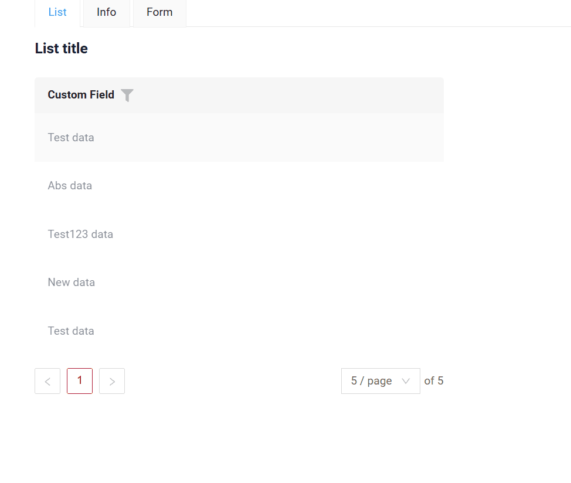
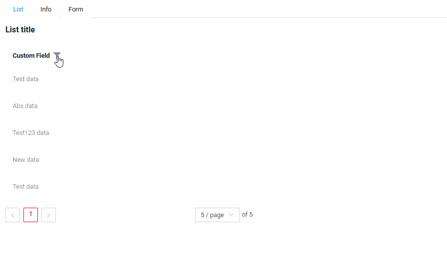
Fixed: Child widget shown by forceActive gets its data at once
After : When the user changes a forceActive field of the parent and a child widget hidden by showCondition becomes visible, the child widget loads its data at once. Save of the parent is not needed.
Before : Only the meta of the child widget was requested, its data was not, so the list stayed empty until the user pressed Save.
Fixed: Multi-upload - drag-and-drop zone is disabled when upload is unavailable
Warning
Not merged into main yet: branch feat/CXBOX-1218.
When the multi-upload action was unavailable for the current record (for example, it was hidden by .available(...) because the task is closed), the "Add Files" button was hidden, but the drag-and-drop zone ("mode": "file-upload-dnd" or "default-and-file-upload-dnd" in options.buttons) stayed active: the user could still choose or drop files and start the upload for an action that is not allowed.
The cause: the zone took itself as disabled only when the action was found in the row meta and its field was missing. If the action was not in the row meta at all (unavailable, or the row meta was not loaded yet), the zone stayed enabled. Actions inside an action group were not found either.
Now the zone is always shown in its place, but it is disabled (gray, like a disabled field) until the row meta is loaded and while the action is unavailable, including actions inside a group. A file dropped on a disabled zone is not accepted and the browser does not open it instead of the application.
Nothing has to be configured: the zone follows the availability of its action, set with .available(...) of the action in the ResponseService.
See Multi-upload files - Availability.
The task is closed
The "Add Files" button is hidden, the drag-and-drop zone is gray and does not accept files.
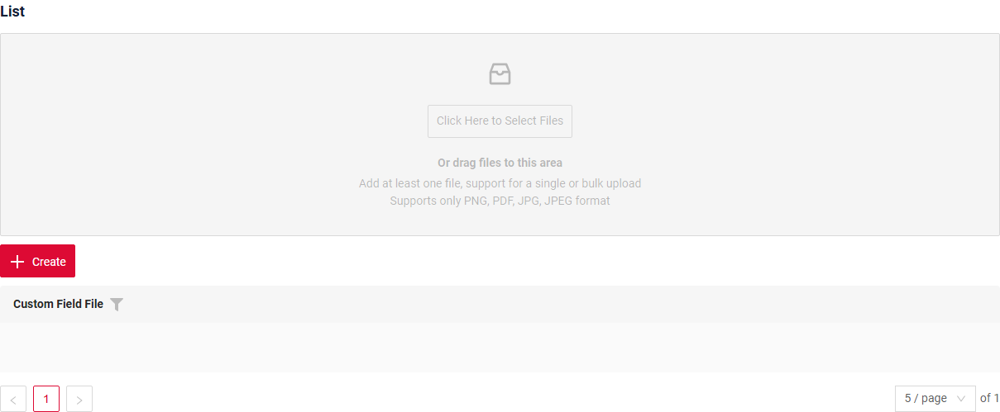
The "Add Files" button is hidden, but the drag-and-drop zone is still active and accepts files.
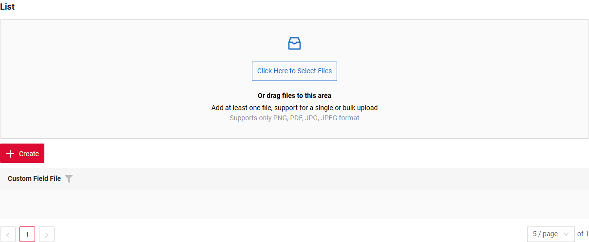
First opening of the screen
When the screen is opened from the menu or the page is reloaded, the row meta of the widget is not loaded yet.
The pictures are taken with every request delayed by 1.5 s; on a usual network this moment lasts as long as the row meta request.
The zone is gray while the row meta is loading, then it becomes active.
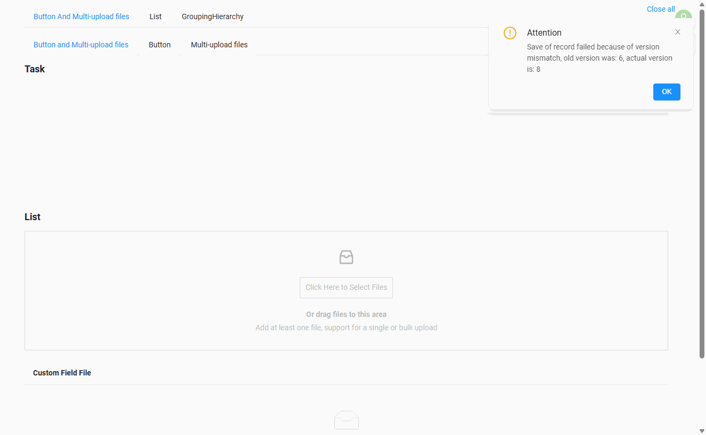
The zone was active at once, before the row meta was loaded: there is no hint with the allowed formats yet, so a file dropped at this moment was not checked by fileAccept.
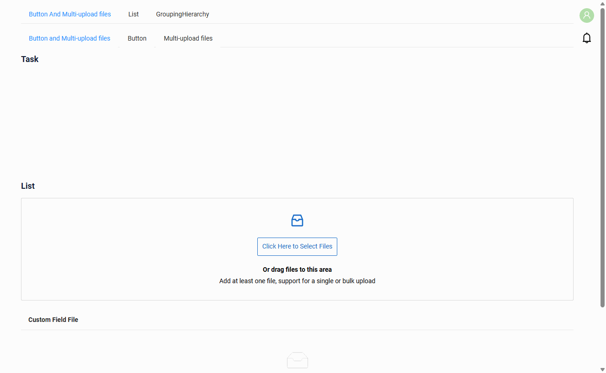
What else changes
- Switching between views of the same screen, saving the record or selecting another record does not make the zone gray: the row meta loaded before is used until the new one comes.
- The
actionKeyof the zone in*.widget.jsonmust match the type of an action returned by the backend. If it does not (a typo, or the action was removed fromgetActions), the zone is always gray now; before, it looked active. - An action placed in an action group on the backend is now found: the zone is active while the action is available and gray while it is not. Before, such an action was not found, and the zone was always active.
- A child widget whose parent BC has no record (for example, the parent list is empty) has no row meta, so its zone is gray. When the parent has a record, the cursor is set on it automatically and the zone is active.
- The multi-upload button (
"subtype": "multiFileUpload") works as before: it is shown only while its action is available.
Fixed: File upload - the error of each file is shown in the upload progress
Warning
Not merged into main yet: branch feat/CXBOX-1038, cxbox-code-samples feat/CXBOX-1038.
After - when the upload of a file fails, the tooltip of its line in the Upload progress window shows the error from the answer to the request of this file. Each file of a multi-upload gets its own text, so the user sees what happened to each file. The same works for a single file uploaded to a fileUpload field.
The text is taken from the answer of the file controller:
errorMessage- any exception of the backend (500);error.popup-BusinessException(418). A popup is not meant for upload errors, so a warning is also written to the browser console.
Each message of the answer is shown on its own line. A short error is shown in a compact tooltip, as before. A long error (for example, with a stack trace) does not go beyond the screen: the tooltip is not higher than 300 px and the text is scrolled inside it. The tooltip stays open while the mouse is on the line of the file or on the tooltip itself, so the user can move the mouse to the tooltip and scroll it; when the mouse leaves both, the tooltip is hidden.
If the answer has no text of the application, the standard text is shown as before: for example, 502 Bad Gateway of a proxy (an HTML page or an empty body), a network error or a cancelled request.
Before - every failed file showed the same text: "Error. File not loaded and no new row created" for multi-upload and "Error. File not loaded to current row" for a field. It was not possible to tell why a file was not uploaded.
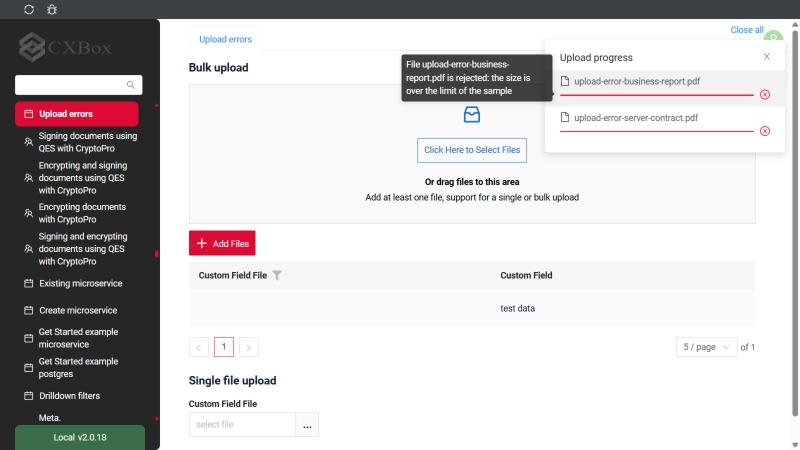
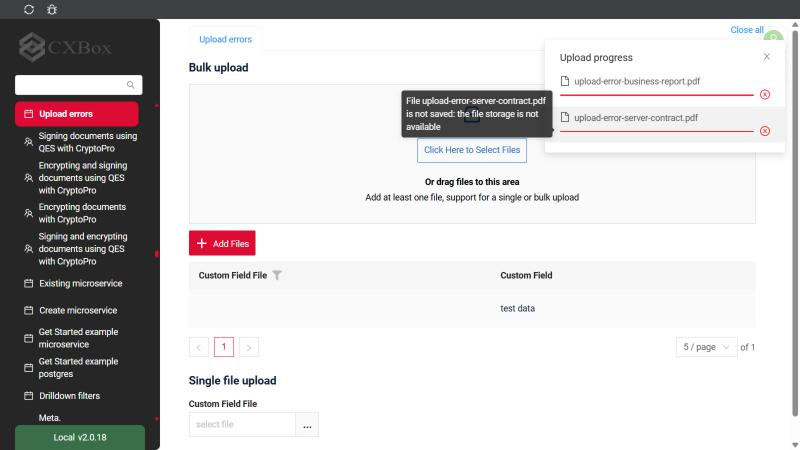
The tooltip is not higher than 300 px, the text is scrolled inside it.
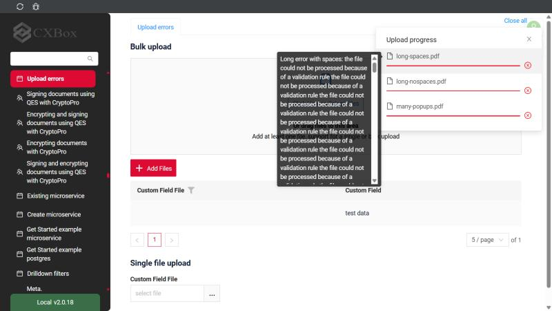
Several messages oferror.popup - each on its own line.
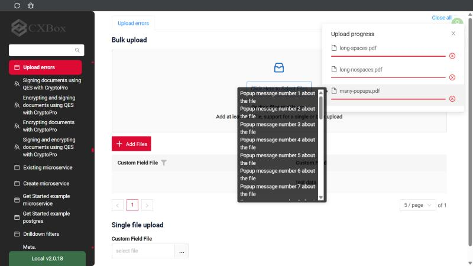
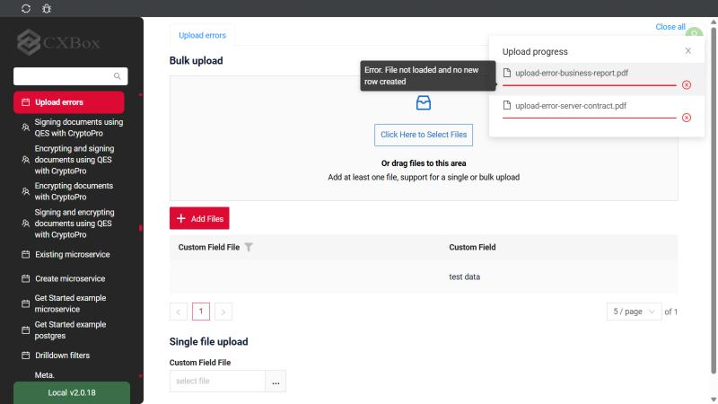
Added: radio - vertical layout and limit of rows for values
Warning
Not merged into main yet: branch CXBOX-1422.
New options of the radio field in .widget.json:
| Option | Values |
|---|---|
displayMode |
horizontal (default): the values in a row. vertical: each value on its own line. |
maxRowsPerValue |
How many rows of a long value are shown in view mode, the rest is cut off. Default 1. |
editMaxRowsPerValue |
The same in edit mode. If not set, maxRowsPerValue is used, and then the default 1. |
Long values no longer overflow narrow fields.
{
"label": "Custom Field",
"key": "customField",
"type": "radio",
"displayMode": "vertical",
"maxRowsPerValue": 2
}
Fixed: File download - IMPROVED one automatic retry after a 502/503/504 error
Sometimes downloading or opening a file ended with the error 502 Bad Gateway, although the file was in place and the second attempt worked. The reason is a bug in Spring Security (spring-security #15510): when a file is streamed, the response headers are written from two threads at once, the response breaks and the proxy answers 502.
Now the application repeats the file request once by itself if the first attempt ends with a network error or with 502, 503 or 504. The user gets the file and does not see the error. If the second attempt fails too, the error is shown as before. Only requests to the file controller of the application itself are repeated, other requests are not affected. The retry is written to the browser console as a warning ([file retry]), so the support team can see it.
Added: Dev panel - runtime errors of the meta and of the frontend
Warning
Not merged into main yet: cxbox-demo #731 (branch feature/CXBOX-1110), needs the core from cxbox #148 (see Meta validation - widgets of an unknown type).
When a widget has a type that the core does not know (for example, a project widget type without a FieldExtractor), the backend hides all its fields, and the widget is not shown on the view. Before, the developer saw an empty place on the view and had to look for the reason in the server log and in the browser console.
Now the dev panel has a new indicator Runtime errors next to the Refresh meta and Debug mode buttons. It shows the number of errors (red) and warnings (yellow) on the current view; a click opens a list:
- Backend - problems found by the meta validation of the core (they come at login, in
metaValidation). Each problem shows the check (Widget type without FieldExtractor), the widget or the view it belongs to, and the text, for exampleType "MyCustomList" (bc "client") is unknown to FieldExtractor beans, fields are hidden. The name of the widget can be copied. - Failed validators - checks that failed themselves: their problems are unknown, see the server log.
- Frontend -
console.errorandconsole.warn, uncaught errors and unhandled promise rejections of the browser. The same messages are counted, not repeated.
Only the problems of the current view are shown: problems of widgets on other views are hidden. Frontend messages are cleared when the user goes to another view and at logout.
In Debug mode the widget with a problem gets a red (error) or yellow (warning) frame, and the screen/view label of the debug panel is colored the same way when the view itself has problems.
Errors are collected only when the dev panel is on (cxbox.meta.dev-panel-enabled); for users without the dev panel nothing changes.
The widget clientList has the type MyCustomList. The indicator shows 1 error and 1 warning, the list explains why the widget is not shown.
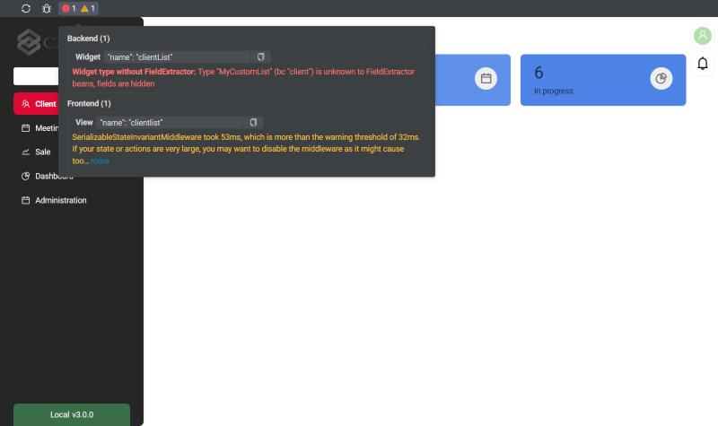
The same meta: the widget is not shown, the dev panel says nothing.
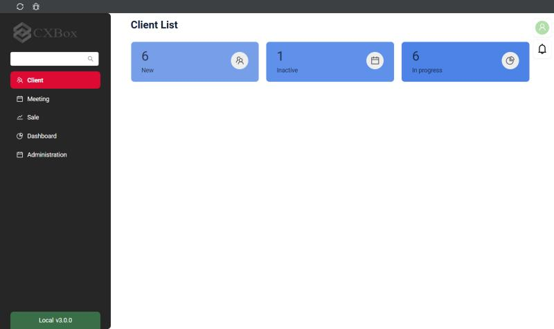
In cxbox-demo the check is on by default (application.yml):
cxbox:
meta:
dev-panel-enabled: ${DEV_PANEL_ENABLED:true}
validation:
enabled: ${META_VALIDATION_ENABLED:true}
log-level: ${META_VALIDATION_LOG_LEVEL:error}
The results are given to the frontend in LoginServiceImpl:
.devPanelEnabled(metaConfigurationProperties.isDevPanelEnabled())
.metaValidation(metaHotReloadService.validateMeta())
Other Changes
CXBOX 5.0.3 (Core)
Added: Drilldowns with field-based filter – hint field
The drilldown filter builder has a new method fb.hint for fields having "type": "hint" in *.widget.json.
It filters the target view by part of the value, case-insensitive (same as for input).
buildRowDependentMeta
fields.setDrilldownWithFilter(
MyExampleDTO_.customFieldHint, DrillDownType.INNER, "/screen/MyExample/view/MyExamplelist/", fc ->
fc.add(
CxboxMyExampleController.myexample,
MyExampleDTO.class,
fb -> fb.hint(MyExampleDTO_.customFieldHint, fields.getCurrentValue(MyExampleDTO_.customFieldHint).orElse(null))
)
);
Added: Mass operations - row values from the frontend and rows that failed on the frontend
For mass signing and encryption the frontend does a part of the work itself (CryptoPro signs or encrypts the files in the browser) and sends the result of each row to the backend. The core now accepts this result:
- Values of a row.
MassDTOhas a new mapoptions: the frontend sends with each row, for example, the ids and names of the signature and encrypted files. They are read withmass.getOption(...). The platform keys are inMassOptionType(SIGNATURE_FILE_ID,SIGNATURE_FILE_NAME,ENCRYPTED_FILE_ID,ENCRYPTED_FILE_NAME); a project can add its own keys with an enum that implementsMassOptionTypeSpecifier. - Rows that failed on the frontend. If the browser could not process a row (for example, it could not sign the file), the frontend sends it with
success = falseand the reason inerrorMessage.getMassIds_()now returns only the rows that the backend has to process.- The new
getMassErrors_()returns the rows that failed on the frontend, so the project can react to them, for example write a log. - The core adds these rows to the result of the action with the message from the frontend, so the user sees them in the result of the mass operation. The handler does not have to do anything; to show another message, return your own
MassDTOwith the id of the row.
Added: Meta validation - widgets of an unknown type
Warning
Not merged into main yet: cxbox #148 (branch feature/CXBOX-1110).
When a project adds its own widget type and does not register a field extractor (FieldExtractor) for it, field security hides all fields of such a widget: the widget is shown empty and nothing explains why. Now the core can check the meta and report such widgets.
- The check runs at startup and on every meta refresh, if it is turned on. Problems are written to the log; meta loading is not stopped.
- The built-in check
WidgetFieldExtractorValidator(titleWidget type without FieldExtractor) reports every widget with abcwhose type noFieldExtractorsupports. The server log also gets a hint: change the type to a known one or register aFieldExtractorbean for the custom type. - When the dev panel is on, the results of the check are also sent to the frontend at login:
MetaHotReloadService.validateMeta()returns a list ofMetaValidationResult(check, title, message, views, widgets,executionFailed), andLoggedUserhas the new fieldmetaValidation. The frontend shows them in the dev panel, see Dev panel - runtime errors. - A project can add its own checks: a Spring bean that implements
MetaValidator. A check that fails itself is written to the log as a warning and does not stop the other checks.
application.yml
cxbox:
meta:
validation:
enabled: true # default false: the check is off
log-level: ERROR # default ERROR; OFF - do not write problems to the log
CXBOX documentation
Added: Description Pie1D widget
We have provided a description of the Pie1D widget: a ring chart where every record is a segment and the total can be shown in the center. The Filtration and Sorting articles got Pie1D examples (they work in the table mode only) with Live Samples, and a "How does it look" and "How to add" section for every widget.
Added: Description Column2D widget
We have provided a description of the Column2D widget: a column chart with one bar per category, grouping of the bars by a field and switching the chart to a table. Column2D examples have been added to the Filtration, Sorting and Pagination articles, placed the same way as for Pie1D.
Added: Description Line2D widget
We have provided a description of the Line2D widget: a line chart with one value per category, several lines when the records are grouped by a field, switching the chart to a table. Line2D examples have been added to the Filtration and Sorting articles.
Added: Description DualAxes2D widget
We have provided descriptions of the widget DualAxes2D - two 2D charts (Column2D and Line2D, or two charts of the same type) in one area with a shared X axis and own Y axes;
Added: Description RelationGraph widget
We have provided descriptions of the widget RelationGraph - the records of a business component as a graph of nodes connected by arrows;
Added: Description CalendarYearList widgets
We have provided descriptions of the widgets CalendarYearList - a year calendar for the events of a whole day: holidays, deadlines, reports.
Added: Description CalendarList widget
We have provided a description of the CalendarList widget by analogy with List: options.calendar, title, color, show condition, create and edit with an inline form and with a view, filtration, periods (month, week, day).
Added: Description CardList widget
We have provided a description of the CardList widget: records as file cards in rows with a preview, a title, a description and a status. Create and edit are described the same way as for List. CardList examples have been added to the Filtration, Pagination, Default page limit and Multi-upload articles.
Added: Description CardCarouselList widget
We have provided a description of the CardCarouselList widget: file cards in one horizontal strip scrolled with arrows; open, edit and delete files right on the cards. An example has been added to the Multi-upload article.
Added: Description FilePreview widget
We have provided a description of the FilePreview widget: the file of the current record is shown right on the page and stays in view while the user fills in the form.
Added: Description DashboardList widget
We have provided a description of the DashboardList widget (deprecated).
Added: Description collapse widget group
We have provided a description of the collapse widget group: widgets of a view are combined into a group that can be collapsed and expanded, collapsedCondition sets the initial state. Supported for List, Form, Info, GroupingHierarchy, Tree, CardList, CardCarouselList, HeaderWidget, AdditionalInfo, AdditionalList and StatsBlock.
Added: Description richText field
We have provided a description of the richText field: the toolbar formatting, storage as Markdown, the content size up to 8,000 characters. The text field article describes the configurable height.
Added: Description hint field
The hint field article has got the color, readonly, filtering and drilldown sections; all screenshots are made by the autotests.
Added: Drilldown tooltip - open in a new tab and copy link
We have provided a description of the drilldown tooltip: when cxbox.ui.drill-down-tooltip: newAndCopy is set in application.yml, hovering over a drilldown field shows the buttons Open link in new tab and Copy link address. Supported for List, AdditionalList, Info, AdditionalInfo, Form and links in notifications.
Added: Filtration - default filter group, reset filters, delete personal filter group
The Filtration article describes the default filter group (default_filter = true in BC_FILTER_GROUPS) and the priority of the filters, the link "To default filter(s)" and deleting a personal filter group. The List, Tree, AdditionalList and AssocTreePopup articles link to these sections.
Added: Filtration - personal filter group with full text search
We have described how the personal filter group works with the full text search: the search text is saved in the group together with the column filters (_fullTextSearch) and is searched again when the group is applied.
Updated: Filtration - filter group for every widget
The filter group and personal filter group sections now have "How does it look" and "How to add" for every widget that supports them: List, AdditionalList, GroupingHierarchy, Tree, PickListPopup, AssocListPopup, PickTreePopup, AssocTreePopup, CardList, CardCarouselList, FilePreview, Pie1D, Column2D, Line2D.
Added: Placeholder for a read-only field
The Placeholder sections of all field articles say that the placeholder is shown for a Readonly field as well, with samples and pictures.
Fixed: StatsBlock and List - show condition by parent entity
The StatsBlock article describes the show condition by parent entity (by current entity is not recommended). In the List article the show condition by parent entity is shown again, each item leads to its own sample.
Fixed: HeaderWidget - title fields
The HeaderWidget article: bgColorKey and other properties of the title fields work without other widgets of the business component. The field used in title as ${customField} is added to fields with the hidden type.
Fixed: Title Color - pickList and inlinePickList
The Title Color sections of the widget articles list pickList and inlinePickList among the applicable fields; Live Sample links and code have been fixed.
Added: Pagination - available options and default page limit
The Pagination article explains the difference between availableLimitsList (options in the dropdown) and PAGE_LIMIT (the default page limit), with a table of combinations.